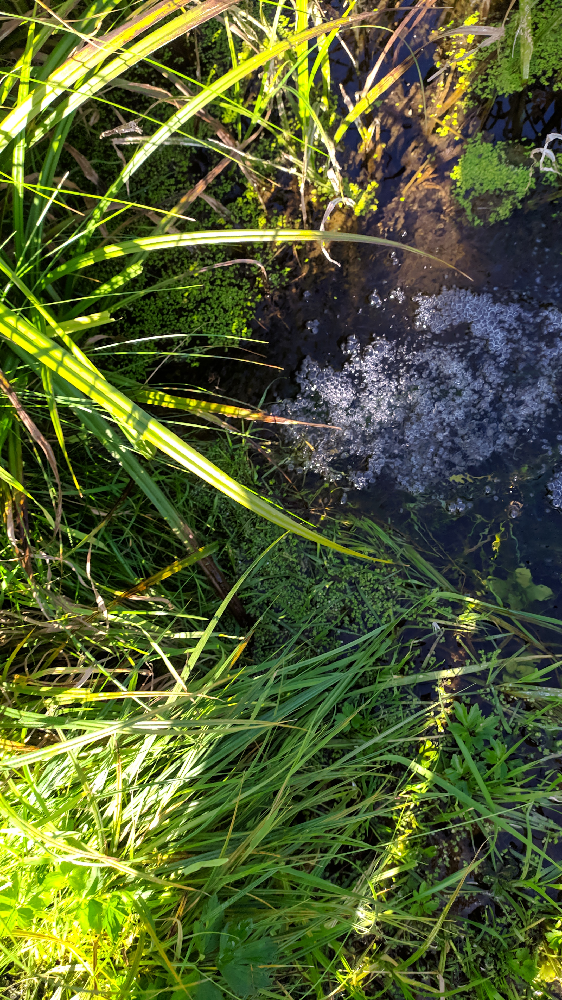
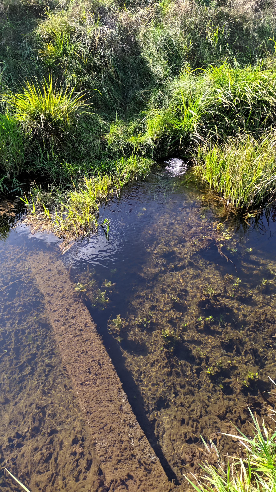
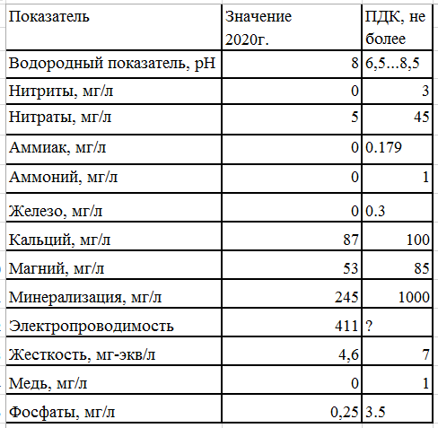

Россошь
19.09.2020
Брестская область > Барановичский район > д. Щербовичи > Россошь


Родник находится за д. Щербовичи, на берегу руч. Россошь.
Чтобы добраться к роднику, идти вдоль ручья Россошь. Вы увидите табличку и бурлящий ключ. Пройдите дальше, и перейдите через ручей по поддону. Затем вернитесь к роднику с другого берега.
Анализ воды

Местоположение
Координаты: 53.32884, 26.25101